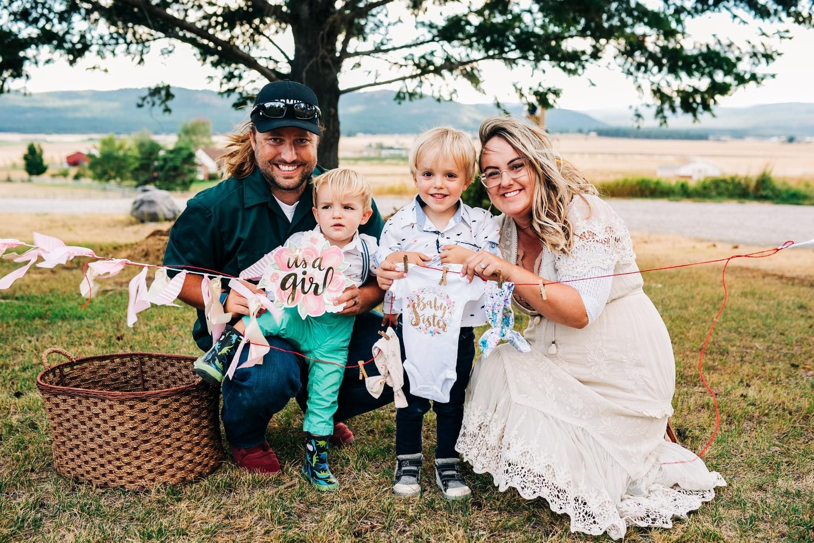

We did not find out boy or girl with our first two. My husband wanting the surprise, me just excited to finally be pregnant with healthy babies.
The surprise was glorious.
"It's a BOY!" My husband exclaimed.
Through the post birth fog, I nodded.
"But is baby HEALTHY?"
"Oh yes, he's perfect!" The nurse exclaimed from the baby warmer as they took his weight.
20 weeks into my Hyperemesis Journey I knew I needed SOMETHING to be excited for. We decided to find out the gender at our anatomy ultrasound that week. Still wanting some form of surprise, we had the ultrasound tech write the gender down for us.
A white envelope was handed to us as if it held the results of Best Picture at the Oscars.
We decided we needed a romantic weekend away at our quiet lake property. We had spent most weekends up there, sleeping in our small trailer, small white hooks hung above our bed to hold my IV bags.
Our romantic weekend consisted of leaving our boys with our precious Hannah-Poppins, and us driving the 40- minutes to the lake. My husband set me up in the hammock with a book until the motion made me nauseated and I needed to move back into our camper.
The sun setting over the lake, stars abounding around us, my husband led me out of my safe spot in the camper, IV infusion already done, and we walked out on the old rickety dock.
He brought out two camp chairs, a beer for himself and tea for me and we sat there staring at each other in silence.
"Are you sure you're ready to find out?" I said.
I was hesitant to open it because I knew it was one of the last things pregnancy related I could look forward to for another 20- weeks.
"Let's open it!"
My husband said, opening the envelope.
"IT'S A GIRL!"
Tears misted my husbands eyes as we sat there in shock, as if all the hard things were being redeemed with a daughter added to our family of boys.

I'd like to say I spent the next 17 weeks shopping for bows and girl things, but it became another thing HG stole. My focus solely on surviving Hyperemesis/Gestational Diabetes and keeping my baby girl alive.
The moment she was born, that placenta, the cause of my woes finally out, relief flooded my body as I looked at my lovely Lorelai.
Bows. Pink. Cozy blankets. Outfit changes. Photoshoots.
It hasn't taken long to redeem what HG may have stolen, I am a girl mom and I am in love.